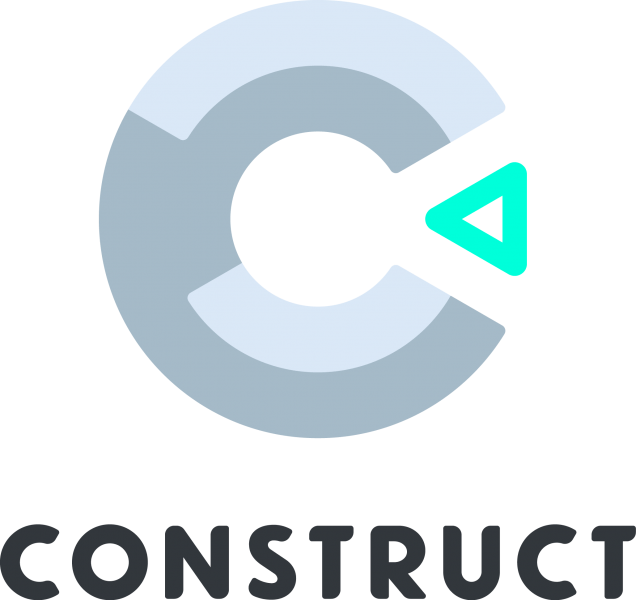

ཐིཋྀ
construct 3 ཐིཋྀ
───── ⋆⋅˚ʚ♡ɞ˚⋅⋆ ─────
what is construct 3?
Construct 3 is a 2D game-making platform/engine that relies on visual/block programming for easier learning and includes JavaScript. It is described as the backbone of many popular games as it is easy to use and browser-friendly.
who made construct 3 and when was it made?
Construct 3 was developed by Scrirra LTD and released on December 4, 2017.
what are some popular games made with construct 3? what is my favorite?
Games made with Construct 3 include "There Is No Game", "Tag", and "Mighty Goose". "There Is No Game" is my favorite.
what is one game i made in construct 3? what other games would you like to make?
I made a maze game in Construct 3. I started developing it on July 9, 2024, and I made it at iCode Cypress, TX. I would like to make a progressive and storytelling platformer-like game in Construct 3 next because those attributes would add interest and gameplay to make a great game.